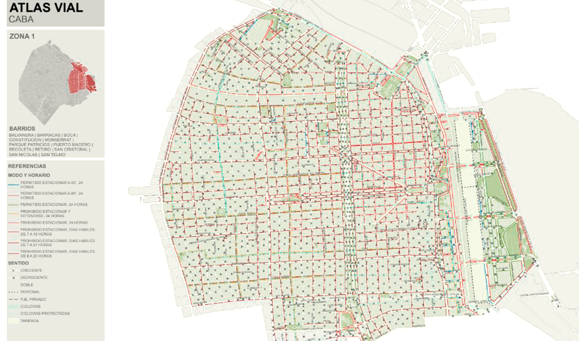
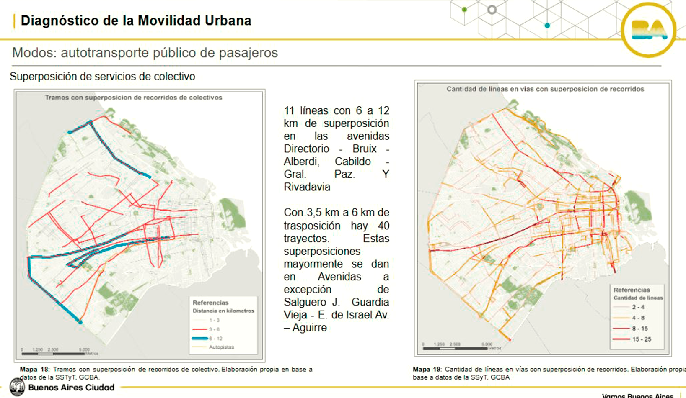
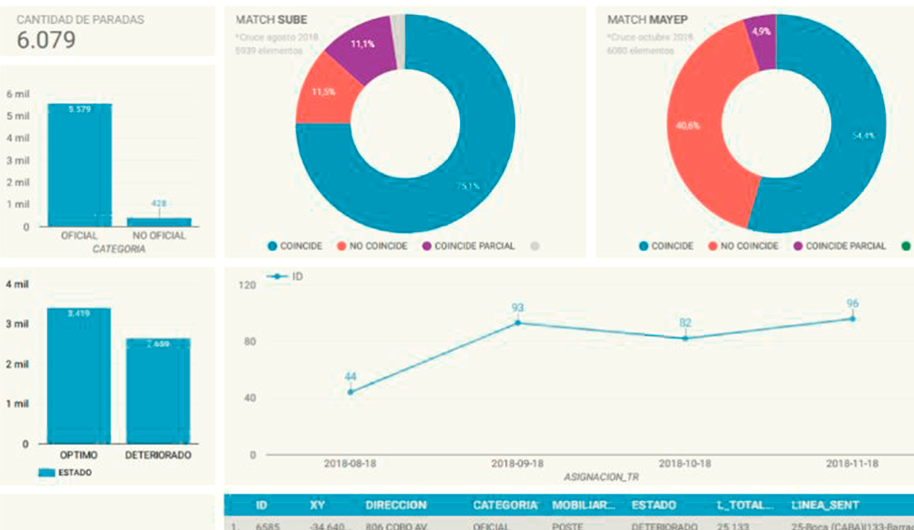
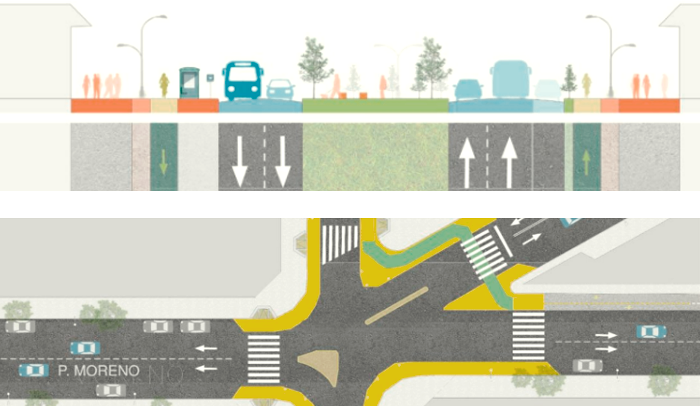
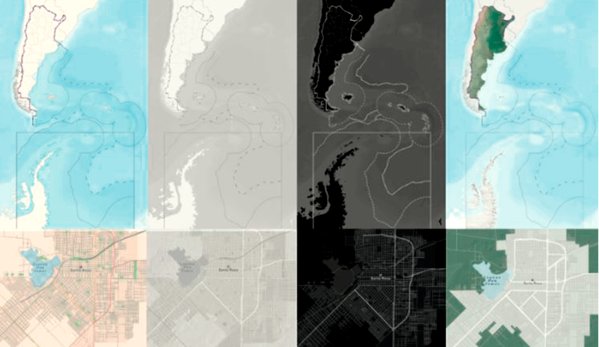
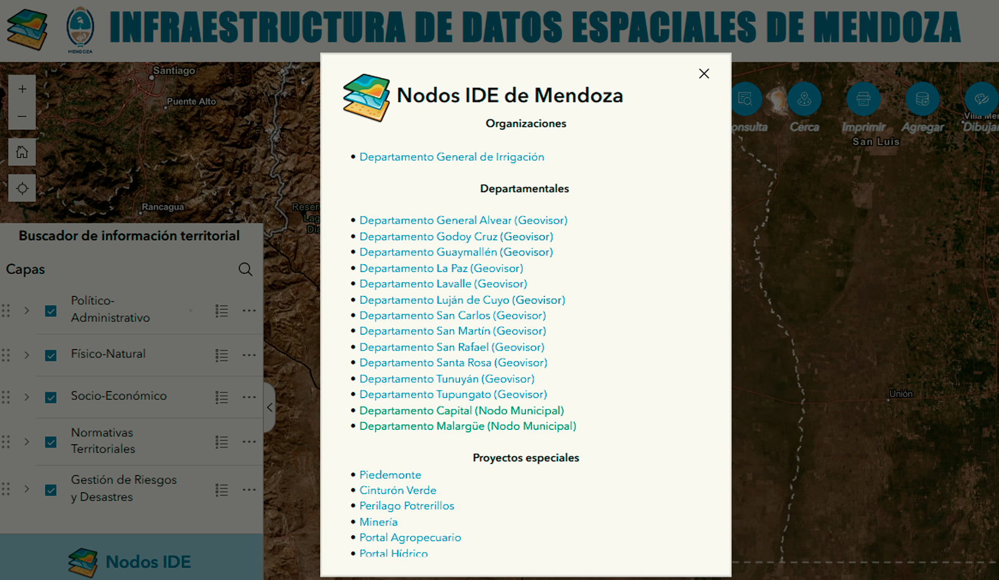
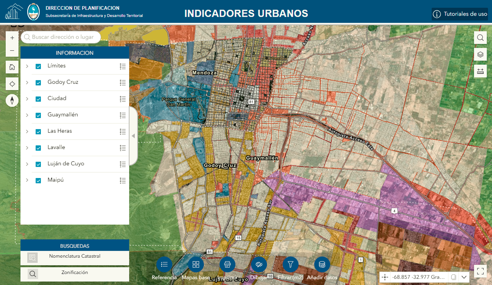

✕

Soy arquitecta formada también en Sistemas de Información Geográfica (SIG).
Me interesa comprender el territorio como un sistema complejo, donde datos, procesos y dinámicas espaciales permiten interpretar cómo se habita y transforma el espacio, traduciendo esa lectura en herramientas y soluciones aplicables a contextos reales.
Nací en Bariloche, Patagonia, Argentina, donde el vínculo con el entorno natural marcó mi manera de entender los espacios desde temprano. Viví y trabajé en distintas ciudades y proyectos de diversas escalas, desarrollando una mirada flexible y curiosa y capacidad de adaptación a distintos contextos de trabajo.
Las actividades al aire libre y el recorrer lugares forman parte de mi manera de aprender y trabajar. Caminar, observar y habitar el paisaje permite comprender dinámicas, escalas y relaciones desde la experiencia directa.
Estos son algunos proyectos en los que participé, experiencias que me permitieron profundizar una lectura sistémica del territorio y asumir un rol activo tanto en los desarrollos como en la definición de criterios que orientaron las soluciones.
A lo largo de este recorrido fui ocupando un rol de articulación entre lo conceptual y su aplicación en contextos reales.







Lectura territorial y análisis espacial aplicado a planificación local.
Integración de SIG y análisis territorial para toma de decisiones.
Trabajo interdisciplinario orientado a procesos urbanos y dinámicas espaciales.
Para contactarte podés dejar un mensaje o encontrarme en LinkedIn.